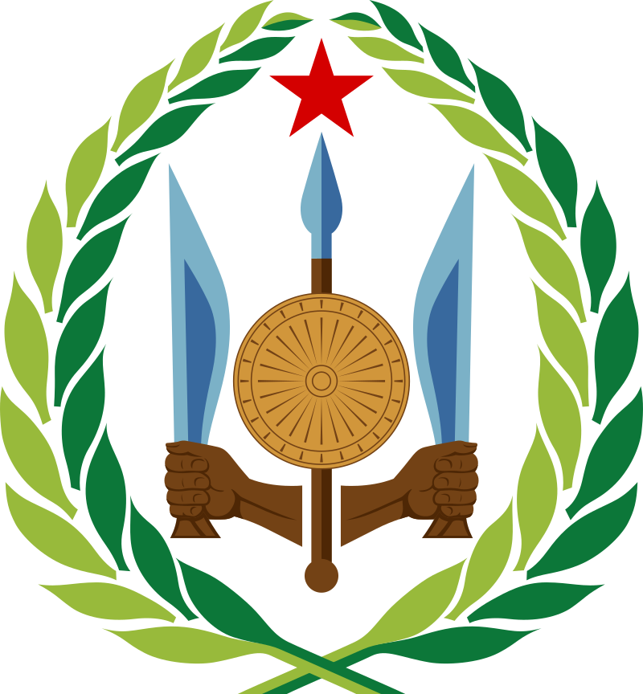
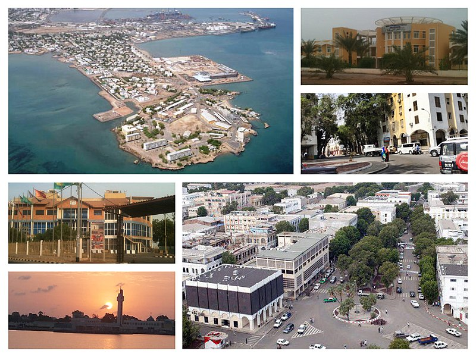

Djibouti, on the Horn of Africa, is a mostly French- and Arabic-speaking
country of dry shrublands, volcanic formations and Gulf of Aden beaches.
It's home to one of the saltiest bodies of water in the world, the low-lying
Lake Assal, in the Danakil Desert. The nomadic Afar people have settlements along
Lake Abbe, a body of saltwater featuring chimneylike mineral formations.

The country has an area of 23,200 km2 (8,958 sq mi).[1]
In antiquity, the territory, together with Ethiopia, Eritrea and Somaliland, was part of the Land of Punt.
Nearby Zeila, now in Somaliland, was the seat of the medieval Adal and Ifat Sultanates. In the late 19th
century, the colony of French
Somaliland was established following treaties signed by the ruling Dir Somali
sultans with the French,[10][11][12] and its railroad to Dire Dawa (and later Addis Ababa) allowed it to
quickly supersede Zeila as the port for southern Ethiopia and the Ogaden.[13] It was renamed the French
Territory of the Afars and the Issas in 1967. A decade later, the Djiboutian people voted for independence.
Djibouti is the capital and largest settlement in Djibouti, situated in the Horn of Africa.
The city is located in eastern Djibouti, approximately 21 kilometres (13 miles) northwest
of the Somaliland border. It is a seaport with the only sheltered harbour on the western side
of the Gulf of Tadjoura. The wadi of Ambouli, flows through the city, separating the older parts
of the city from the Balbala district. The landscape around the city, along with Djibouti's country